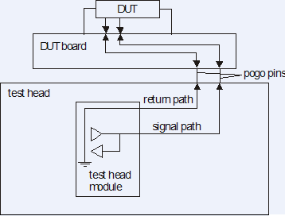

Signal path
Signal traces carry all electrical signals from the test system electronics to the DUT and back. The physical characteristics of these traces, and the conductors that carry the return currents, determine the quality of the signals at the DUT and the quality of the signals detected at the test system. The figure below shows a schematic illustration of the signal path between the test system electronics and the DUT.

If the signal returns are correctly managed (see Grounding), signal traces can be modeled as lossless transmission lines at frequencies below 100 MHz. Other applications require a more thorough understanding of trace behavior. For high-speed digital applications, for example, you also must account for the connections (see High-Speed Design).
A lossless transmission line is characterized by its characteristic impedance (Z0) and the propagation delay time (tpd) of the signal. (This model ignores any bandwidth limitations caused by losses in the signal trace due to dissipation or reflection.)
The contact areas (pogo connection, contactor/probe card needle) introduce imperfections in the signal path. You can often model these contactors as lumped components (shunt capacitors and series inductors).
The combined characteristics of all components in the signal path define the bandwidth limitations for signals at the DUT. Plan the layout of signal traces for critical application buses to minimize the impact of transmission line and contact effects.
If the DUT interface of the Twinning solution is used, there will be an additional signal path introduced by the pogo pin connecting the family board with the DUT daughter board.
Functional changes
- Introduced before SmarTest 6.3.2